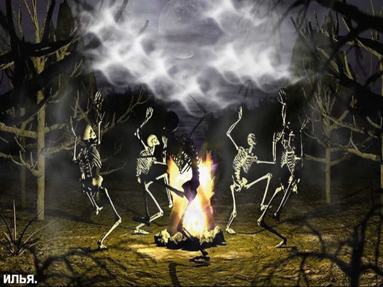

Пайк начинал, как многие в Билджвотере: в Кровавых доках. Каждый день в бойнях на берегу разделывали огромные туши морских чудовищ. Пайк нанялся на бойню в так называемой Кровавой гавани, которую даже волны прилива не могли очистить от красной жижи, постоянно стекавшей в море по деревянным желобам.Пайк познал все прелести своего кровавого ремесла: работа была каторжной, а оплата – мизерной. В то же время капитаны и их команды получали немало золота за те устрашающие туши, которые они привозили, а бригада Пайка затем разделывала. И Пайку захотелось иметь больше, чем пару медяков в кармане. Он упросил знакомого боцмана взять его на корабль...
Давным-давно в центральной ионийской провинции Барл среди живописных горных пейзажей стояла деревушка под названием Вуджу. Здесь мечтавший стать непревзойденным воином мальчик по имени Йи учился владеть мечом, еще не подозревая о том, какой путь уготован ему судьбой. Как и все его сверстники, Йи восхищался мечниками в шелковых одеяниях, о которых сочиняли поэмы. Его родители были оружейниками, и все посещавшие кузню воины говорили, что у их сына большое будущее. По утрам Йи фехтовал с матерью, а по вечерам при свечах наизусть читал стихи отцу. А когда по достижении нужного возраста он поступил в обучение к мастерам фехтования вуджу, радости и гордости родителей не было предела...
Талант и самодисциплина не изменили мальчику и на тренировках, и он превзошел все ожидания своих
учителей. Вскоре вся деревня заговорила о "юном мастере Йи".
Однако смиренный ученик не мог не думать об остальной Ионии. С самых высоких пагод открывался вид на
далекие поселения, о которых никто никогда не говорил. Когда же Йи вознамерился спуститься с горы со
своим верным мечом, наставники его не пустили. Основатели деревни Вуджу считали одноименное искусство
величайшей ценностью, которой не стоит делиться с чужаками, священнодействием, с помощью которого нельзя
проливать кровь. Веками вуджу развивалось в горной деревне вдали от посторонних глаз.
Все изменилось в тот день, когда Йи увидел огромные клубы дыма над далекими городами. Ноксианские отряды
пришли с моря, как волна – и волна эта стала красной, когда они начали покорять ионийские поселения одно
за другим. Для Йи судьба ионийского народа оказалась важнее священных традиций Вуджу, и он отправился на
защиту Исконной земли. Он произвел настоящий фурор, когда подобно вихрю ворвался в ряды противника и
обратил его в бегство блистательной и прежде невиданной техникой владения мечом.
Ноксианец по рождению, Шида Каин еще ребенком вместе с другими детьми попал в армию – к этой жестокой хитрости прибегали самые подлые из командиров империи Борама Дарквилла. Потерпев сокрушительное поражение при Пласидиуме в Навори, ноксианцы в корне изменили стратегию и повели войну на изнурение.
ПосмотретьИония издревле была известна как край дикой магии, где могущественные духи и самобытные народы мирно сосуществовали друг с другом. Однако порой эта идиллия нарушалась, и требовались недюжинные усилия для восстановления гармонии.
ПосмотретьНасус – существо с головой шакала родом из древней Шуримы. Жителями пустыни он почитался как полубог. Насус был одним из вознесшихся, он обладал острейшим умом, был хранителем знаний и несравненным стратегом, мудрость которого на протяжении многих веков вела древнюю империю к величию.
Посмотреть